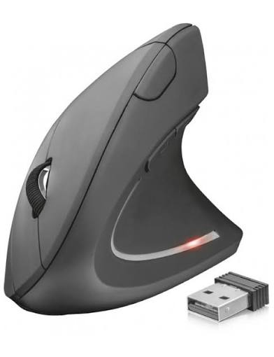
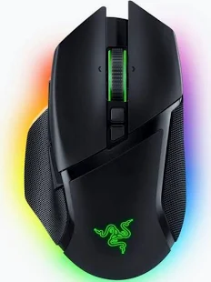

Mysz komputerowa to urządzenie wskazujące, które służy do sterowania pozycją kursora na ekranie monitora, zaznaczania elementów, otwierania plików oraz wykonywania operacji w interfejsie graficznym systemu.
Współczesne myszki wykorzystują zaawansowane sensory optyczne lub laserowe, które rejestrują ruch urządzenia po podłożu z dużą precyzją. Jest to ważne zarówno podczas codziennej pracy, jak i w grach komputerowych.


Sensor jest jednym z najważniejszych elementów myszki. Odpowiada za wykrywanie ruchu urządzenia i przekazywanie informacji do komputera. Najczęściej spotykane są sensory optyczne oraz laserowe.
Wykorzystuje światło, najczęściej emitowane przez diodę LED, oraz niewielką kamerę do analizowania powierzchni pod myszką. Na podstawie kolejnych obrazów określa kierunek i szybkość ruchu.
Wykorzystuje światło lasera do analizowania powierzchni. Może odczytywać szczegóły podłoża, których niektóre sensory optyczne nie są w stanie wykryć.
Wiele myszek optycznych wykorzystuje czerwoną diodę LED. Oświetla ona powierzchnię pod urządzeniem, dzięki czemu sensor może analizować jej strukturę i wykrywać ruch. Nie wszystkie myszki używają jednak czerwonego światła.
Jednym z podstawowych podziałów myszek komputerowych jest sposób komunikacji z komputerem. Urządzenia mogą przesyłać dane za pomocą przewodu lub połączenia bezprzewodowego.
Łączy się z komputerem za pomocą kabla, najczęściej USB. Nie wymaga baterii ani ładowania, ponieważ może pobierać energię bezpośrednio z portu USB.
Komunikuje się z komputerem za pomocą Bluetooth lub odbiornika radiowego USB. Dzięki temu nie potrzebuje przewodu łączącego ją z komputerem.
Tak. Nowoczesne myszki gamingowe wykorzystują zaawansowane połączenia radiowe 2,4 GHz, które mogą zapewniać bardzo niskie opóźnienia. Sama obecność kabla nie oznacza automatycznie szybszego działania urządzenia.
DPI (Dots Per Inch) to parametr określający liczbę punktów przypadających na cal. W przypadku myszek jest powszechnie wykorzystywany do opisywania czułości sensora. Im wyższa wartość DPI, tym dalej może przesunąć się kursor przy takim samym ruchu fizycznym myszki.
| Wartość DPI | Charakterystyka | Przykładowe zastosowanie |
|---|---|---|
| 400–800 | Niska czułość | Gry wymagające precyzji |
| 800–1600 | Średnia czułość | Gry i codzienna praca |
| 1600–3200 | Wysoka czułość | Praca na dużych ekranach |
| 3200+ | Bardzo wysoka czułość | Indywidualne ustawienia |
Niekoniecznie. Bardzo wysokie DPI nie oznacza automatycznie większej precyzji. Większość użytkowników korzysta ze znacznie niższych wartości. Ważna jest jakość sensora, jego dokładność oraz indywidualne ustawienia.
CPI (Counts Per Inch) jest technicznie dokładniejszym określeniem liczby zarejestrowanych jednostek ruchu na cal. W praktyce producenci i użytkownicy często używają jednak nazwy DPI.
Częstotliwość raportowania określa, jak często myszka przesyła informacje o swoim położeniu do komputera. Parametr podawany jest w hercach (Hz). Wyższa częstotliwość może zmniejszać opóźnienie przesyłania informacji.
Myszka przesyła dane 125 razy na sekundę. Jest to wartość spotykana w prostszych urządzeniach.
Urządzenie przesyła dane 1000 razy na sekundę. Jest to częsta wartość w myszkach przeznaczonych do gier komputerowych.
Myszka przesyła informacje 4000 razy na sekundę. Takie rozwiązanie spotyka się w bardziej zaawansowanych modelach gamingowych.
Przy częstotliwości 1000 Hz myszka raportuje swoje położenie co około 1 milisekundę. Przy 125 Hz robi to co około 8 milisekund.
Myszki różnią się nie tylko elektroniką, ale również kształtem, rozmiarem i sposobem dopasowania do dłoni użytkownika. Odpowiednia konstrukcja może zwiększyć wygodę podczas wielogodzinnego korzystania z komputera.
Jej kształt jest zaprojektowany tak, aby wygodnie dopasowywała się do dłoni. Niektóre modele mają specjalne wyprofilowanie dla prawej lub lewej ręki.
Jest przeznaczona do gier komputerowych. Często posiada dodatkowe przyciski, zaawansowany sensor oraz możliwość zmiany czułości.
Charakteryzuje się niewielką masą, co ułatwia szybkie przemieszczanie urządzenia. Jest popularna wśród graczy korzystających z dynamicznych gier.
Jest to sposób trzymania myszki, w którym większa część dłoni spoczywa na jej obudowie. Wymaga zazwyczaj odpowiednio wyprofilowanej i większej konstrukcji.
W tym sposobie chwytu dłoń jest lekko uniesiona, a palce są zgięte. Kontakt z myszką odbywa się głównie w okolicy palców i tylnej części dłoni.
W tym przypadku myszka jest kontrolowana głównie opuszkami palców, bez opierania całej dłoni na jej powierzchni.
Większość myszek posiada dwa główne przyciski oraz rolkę przewijania. Bardziej zaawansowane modele oferują również dodatkowe elementy sterujące, które można przypisać do wybranych funkcji.
Służy przede wszystkim do zaznaczania elementów, otwierania plików oraz wykonywania większości operacji.
Najczęściej otwiera menu kontekstowe, w którym znajdują się dodatkowe opcje dotyczące wybranego elementu.
Pozwala przewijać strony internetowe, dokumenty i listy. W wielu myszkach można również nacisnąć rolkę, wykorzystując ją jako dodatkowy przycisk.
Najczęściej znajdują się obok kciuka. Domyślnie służą do cofania i przechodzenia do kolejnej strony internetowej. Można je również konfigurować w oprogramowaniu producenta.
Pozwala szybko zmienić czułość sensora. Dzięki temu użytkownik może dostosować szybkość kursora do wykonywanego zadania.
Pierwszy prototyp myszy komputerowej został opracowany przez Douglasa Engelbarta w latach 60. XX wieku. Urządzenie miało drewnianą obudowę i dwa metalowe kółka.
Nazwa pochodzi od podobieństwa urządzenia do małego zwierzęcia. Kabel przypominał ogon, a sama obudowa miała kształt przypominający ciało myszy.
Scroll to potoczne określenie przewijania zawartości ekranu. Funkcja ta stała się popularna dzięki rolce umieszczonej pomiędzy głównymi przyciskami myszy.
Tak. Wiele współczesnych myszek działa bez problemu na biurku, blacie lub innych odpowiednich powierzchniach. Podkładka może jednak poprawić płynność ruchu i chronić spód urządzenia.
Jest to specjalny uchwyt na przewód myszy. Utrzymuje kabel nad powierzchnią biurka, ograniczając jego zahaczanie o inne przedmioty podczas ruchu.
Niektóre zaawansowane modele posiadają wbudowaną pamięć. Można w niej zapisać profile ustawień, takie jak DPI, przypisanie przycisków lub konfiguracje podświetlenia.
RGB oznacza system kolorów Red, Green, Blue. Pozwala tworzyć różne barwy podświetlenia, które można dostosować za pomocą oprogramowania. Podświetlenie pełni głównie funkcję estetyczną.